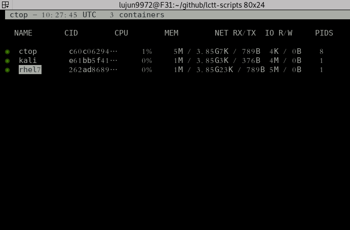
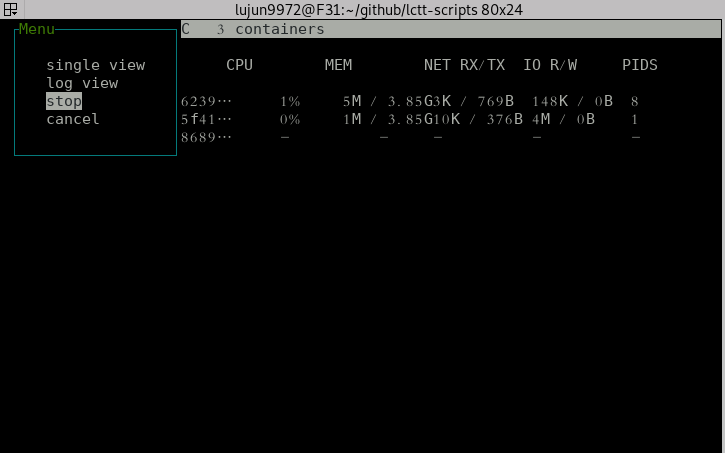
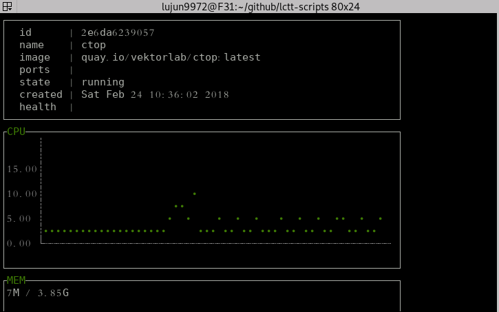
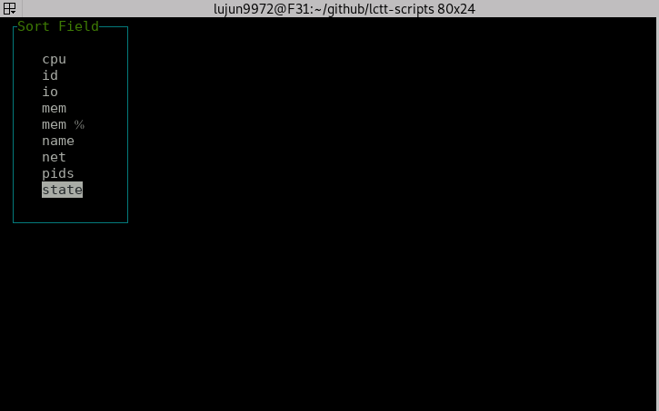
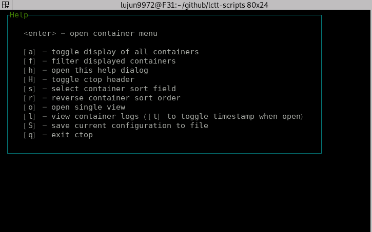

使用ctop来管理容器
ctop是一款linux上针对容器的类top工具，目前ctop支持Docker和runC，其他容器的支持也正在开发中。
安装ctop
ctop的安装有两种形式，一种是直接下载它编译好的二进制文件：
sudo wget https://github.com/bcicen/ctop/releases/download/v0.7/ctop-0.7-linux-amd64 -O /usr/local/bin/ctop sudo chmod +x /usr/local/bin/ctop
你还可以通过Docker来运行它：
docker run --rm -ti \ --name=ctop \ -v /var/run/docker.sock:/var/run/docker.sock \ quay.io/vektorlab/ctop:latest
对与archlinux来说，ctop已经纳入AUR中，因此可以通过 yaourt 等AUR工具来安装
yaourt -S ctop
使用方法
ctop的使用方法很简单，直接运行 ctop 就会进入一个类似top的界面:

这个界面的头部显示了当前的时间，以及容器总数。若想省略头部信息可以按下 H 键。
此外，默认情况下ctop会把运行和非运行状态的容器都显示出来，按下 a 键则可以切换只显示运行中的容器。
你还可以按下 f 输入过滤条件来过滤容器。
管理容器
ctop提供了少许的管理容器的能力，在选中的容器上按下 Enter 就能弹出一个菜单，选中菜单功能回车即可。
在运行中的容器上，你可以选择停止容器： 
在已经停止的容器上，你可以选择启动容器或者删除容器

查看容器信息
按下 o 键或选择菜单中的 single view 就能查看光标所在容器的详细信息了：

查看容器日志
按下 l 键或选择菜单中的 log view 则能查看光标所在容器的日志：

容器排序
默认ctop根据容器的 state 状态来排序的，不过按下 s 键可以指定其他的排序方式

查看帮助
按下 h 键可以查看快捷键的说明：
